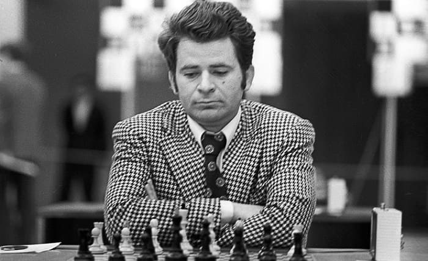
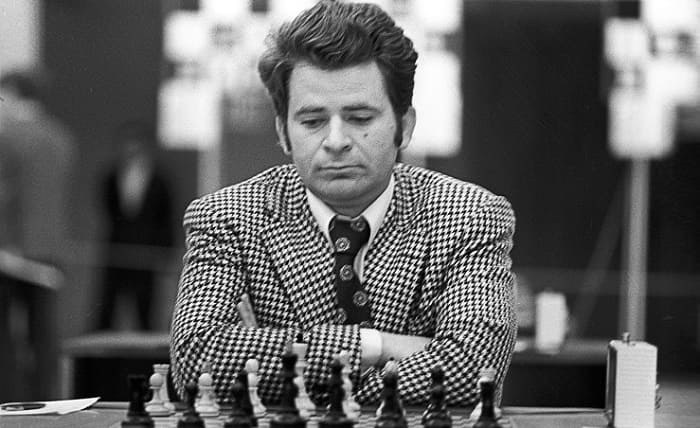

Jugadores
Aquí encontrarás información sobre los jugadores más destacados de la historia del ajedrez.
Bobby Fischer fue un jugador de ajedrez estadounidense y el undécimo campeón mundial de ajedrez. Fischer ganó el título mundial en 1972 al vencer al campeón soviético Boris Spassky. Fischer es considerado uno de los mejores jugadores de ajedrez de todos los tiempos.